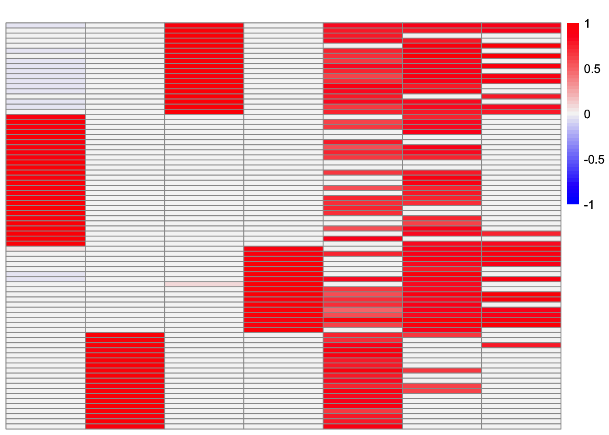
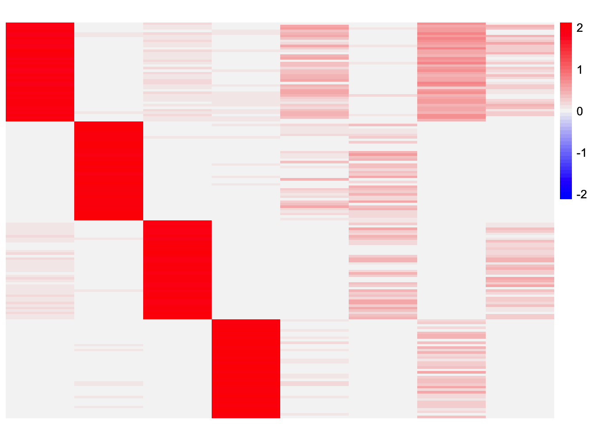
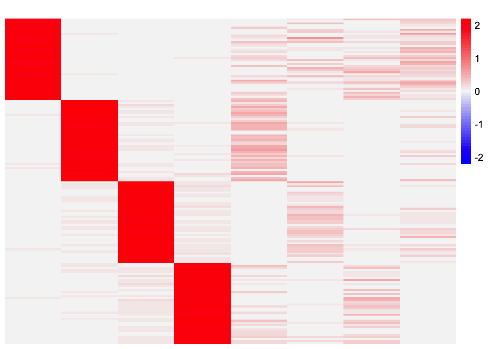
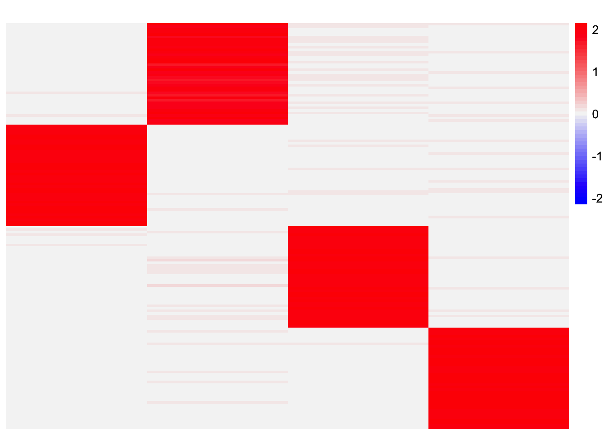

bal_nonoverlap_setting
Annie Xie
2025-09-11
Last updated: 2025-09-17
Checks: 7 0
Knit directory: stability_selection/
This reproducible R Markdown analysis was created with workflowr (version 1.7.1). The Checks tab describes the reproducibility checks that were applied when the results were created. The Past versions tab lists the development history.
Great! Since the R Markdown file has been committed to the Git repository, you know the exact version of the code that produced these results.
Great job! The global environment was empty. Objects defined in the global environment can affect the analysis in your R Markdown file in unknown ways. For reproduciblity it’s best to always run the code in an empty environment.
The command set.seed(20250906) was run prior to running
the code in the R Markdown file. Setting a seed ensures that any results
that rely on randomness, e.g. subsampling or permutations, are
reproducible.
Great job! Recording the operating system, R version, and package versions is critical for reproducibility.
Nice! There were no cached chunks for this analysis, so you can be confident that you successfully produced the results during this run.
Great job! Using relative paths to the files within your workflowr project makes it easier to run your code on other machines.
Great! You are using Git for version control. Tracking code development and connecting the code version to the results is critical for reproducibility.
The results in this page were generated with repository version 8549102. See the Past versions tab to see a history of the changes made to the R Markdown and HTML files.
Note that you need to be careful to ensure that all relevant files for
the analysis have been committed to Git prior to generating the results
(you can use wflow_publish or
wflow_git_commit). workflowr only checks the R Markdown
file, but you know if there are other scripts or data files that it
depends on. Below is the status of the Git repository when the results
were generated:
Ignored files:
Ignored: .DS_Store
Ignored: .Rhistory
Ignored: .Rproj.user/
Unstaged changes:
Modified: analysis/baltree_setting.Rmd
Modified: analysis/sparse_overlap_setting.Rmd
Note that any generated files, e.g. HTML, png, CSS, etc., are not included in this status report because it is ok for generated content to have uncommitted changes.
These are the previous versions of the repository in which changes were
made to the R Markdown
(analysis/bal_nonoverlap_setting.Rmd) and HTML
(docs/bal_nonoverlap_setting.html) files. If you’ve
configured a remote Git repository (see ?wflow_git_remote),
click on the hyperlinks in the table below to view the files as they
were in that past version.
| File | Version | Author | Date | Message |
|---|---|---|---|---|
| Rmd | 8549102 | Annie Xie | 2025-09-17 | Update row-split analysis in bal nonoverlap setting |
| html | 3532ad3 | Annie Xie | 2025-09-11 | Build site. |
| Rmd | 9962de9 | Annie Xie | 2025-09-11 | Add exporation of balanced non-overlap setting |
Introduction
In this analysis, we are interested in testing stability selection approaches in the balanced non-overlapping setting. At a high level, the stability selection involves 1) splitting the data into two subsets, 2) applying the method to each subset, 3) choosing the components that have high correspondence across the two sets of results. We will test two different approaches to step 1). The first approach is splitting the data by splitting the columns. This approach feels intuitive since we are interested in the loadings matrix, which says something about the samples in the dataset. In a population genetics application, one could argue that all of the chromosomes are undergoing evolution independently, and so you could split the data by even vs. odd chromosomes to get two different datasets. However, in a single-cell RNA-seq application, it feels more natural to split the data by cells – this feels more like creating sub-datasets compared to splitting by genes (unless you want to make some assumption that the genes are pulled from a “population”, but I think that feels less natural). This motivates the second approach: splitting the data by splitting the rows.
library(dplyr)
library(ggplot2)
library(pheatmap)source('code/visualization_functions.R')
source('code/stability_selection_functions.R')Data Generation
In this analysis, we will focus on the balanced non-overlapping setting.
sim_star_data <- function(args) {
set.seed(args$seed)
n <- sum(args$pop_sizes)
p <- args$n_genes
K <- length(args$pop_sizes)
FF <- matrix(rnorm(K * p, sd = rep(args$branch_sds, each = p)), ncol = K)
LL <- matrix(0, nrow = n, ncol = K)
for (k in 1:K) {
vec <- rep(0, K)
vec[k] <- 1
LL[, k] <- rep(vec, times = args$pop_sizes)
}
E <- matrix(rnorm(n * p, sd = args$indiv_sd), nrow = n)
Y <- LL %*% t(FF) + E
YYt <- (1/p)*tcrossprod(Y)
return(list(Y = Y, YYt = YYt, LL = LL, FF = FF, K = ncol(LL)))
}pop_sizes <- rep(40,4)
n_genes <- 1000
branch_sds <- rep(2,4)
indiv_sd <- 1
seed <- 1
sim_args = list(pop_sizes = pop_sizes, branch_sds = branch_sds, indiv_sd = indiv_sd, n_genes = n_genes, seed = seed)
sim_data <- sim_star_data(sim_args)This is a heatmap of the true loadings matrix:
plot_heatmap(sim_data$LL)
| Version | Author | Date |
|---|---|---|
| 3532ad3 | Annie Xie | 2025-09-11 |
GBCD
In this section, I try stability selection with the GBCD method. In my experiments, I’ve found that GBCD tends to return extra factors (partially because the point-Laplace initialization will yield extra factors).
Stability Selection via Splitting Columns
First, I try splitting the data by splitting the columns.
set.seed(1)
X_split_by_col <- stability_selection_split_data(sim_data$Y, dim = 'columns')gbcd_fits_by_col <- list()
for (i in 1:(length(X_split_by_col)-2)){
gbcd_fits_by_col[[i]] <- gbcd::fit_gbcd(X_split_by_col[[i]],
Kmax = 4,
prior = ebnm::ebnm_generalized_binary,
verbose = 0)$L
}[1] "Form cell by cell covariance matrix..."
user system elapsed
0.005 0.001 0.005
[1] "Initialize GEP membership matrix L..."
Adding factor 1 to flash object...
Wrapping up...
Done.
Adding factor 2 to flash object...
Adding factor 3 to flash object...
Adding factor 4 to flash object...
Wrapping up...
Done.Warning in report.maxiter.reached(verbose.lvl): Maximum number of iterations
reached. user system elapsed
4.936 0.116 5.055
[1] "Estimate GEP membership matrix L..."Warning in report.maxiter.reached(verbose.lvl): Maximum number of iterations
reached.
Warning in report.maxiter.reached(verbose.lvl): Maximum number of iterations
reached.
Warning in report.maxiter.reached(verbose.lvl): Maximum number of iterations
reached. user system elapsed
15.142 0.185 15.354
[1] "Estimate GEP signature matrix F..."
Backfitting 6 factors (tolerance: 1.19e-03)...
Difference between iterations is within 1.0e+00...
An update to factor 2 decreased the objective by 2.910e-11.
An update to factor 2 decreased the objective by -0.000e+00.
An update to factor 2 decreased the objective by 2.910e-11.
An update to factor 2 decreased the objective by -0.000e+00.
An update to factor 2 decreased the objective by 8.731e-11.
An update to factor 2 decreased the objective by 2.910e-11.
An update to factor 2 decreased the objective by -0.000e+00.
An update to factor 2 decreased the objective by 2.910e-11.
An update to factor 2 decreased the objective by 2.910e-11.
An update to factor 2 decreased the objective by -0.000e+00.
An update to factor 2 decreased the objective by 1.455e-11.
--Maximum number of iterations reached!
Wrapping up...
Done.
user system elapsed
8.767 0.235 9.003
[1] "Form cell by cell covariance matrix..."
user system elapsed
0.003 0.000 0.003
[1] "Initialize GEP membership matrix L..."
Adding factor 1 to flash object...
Wrapping up...
Done.
Adding factor 2 to flash object...
Adding factor 3 to flash object...
Adding factor 4 to flash object...
Wrapping up...
Done.Warning in report.maxiter.reached(verbose.lvl): Maximum number of iterations
reached. user system elapsed
2.541 0.069 2.611
[1] "Estimate GEP membership matrix L..."Warning in report.maxiter.reached(verbose.lvl): Maximum number of iterations
reached.
Warning in report.maxiter.reached(verbose.lvl): Maximum number of iterations
reached.
Warning in report.maxiter.reached(verbose.lvl): Maximum number of iterations
reached. user system elapsed
14.559 0.163 14.722
[1] "Estimate GEP signature matrix F..."
Backfitting 6 factors (tolerance: 1.19e-03)...
Difference between iterations is within 1.0e+01...
--Estimate of factor 6 is numerically zero!
Difference between iterations is within 1.0e+00...
Difference between iterations is within 1.0e-01...
--Estimate of factor 5 is numerically zero!
Difference between iterations is within 1.0e-02...
Wrapping up...
Done.
user system elapsed
5.873 0.151 6.025 This is heatmap of the loadings estimate from the first subset:
plot_heatmap(gbcd_fits_by_col[[1]], colors_range = c('blue','gray96','red'), brks = seq(-max(abs(gbcd_fits_by_col[[1]])), max(abs(gbcd_fits_by_col[[1]])), length.out = 50))
| Version | Author | Date |
|---|---|---|
| 3532ad3 | Annie Xie | 2025-09-11 |
This is a heatmap of the loadings estimate from the second subset:
plot_heatmap(gbcd_fits_by_col[[2]], colors_range = c('blue','gray96','red'), brks = seq(-max(abs(gbcd_fits_by_col[[2]])), max(abs(gbcd_fits_by_col[[2]])), length.out = 50))
| Version | Author | Date |
|---|---|---|
| 3532ad3 | Annie Xie | 2025-09-11 |
One observation is GBCD returns duplicate factors. Why?
results_by_col <- stability_selection_post_processing(gbcd_fits_by_col[[1]], gbcd_fits_by_col[[2]], threshold = 0.8)
L_est_by_col <- results_by_col$LThis is the similarity matrix:
results_by_col$similarity Baseline GEP1 GEP2 GEP3 GEP4
Baseline 0.002036051 0.0008702023 6.789660e-27 9.986165e-01 9.987837e-01
GEP1 0.999018321 0.0035627650 2.911801e-07 1.470870e-03 4.704740e-03
GEP2 -0.008832349 0.9711621318 1.299493e-01 2.290885e-02 2.482999e-02
GEP3 0.007283325 0.0090558806 9.980530e-01 3.511246e-12 1.734330e-11
GEP4 0.002992929 0.9332134390 1.461648e-24 7.347701e-02 6.958626e-02
GEP5 0.007391862 0.0090400999 9.985535e-01 3.448226e-12 1.703617e-11
GEP5
Baseline 0.23560380
GEP1 0.09232634
GEP2 0.06501785
GEP3 0.94736512
GEP4 -0.03882397
GEP5 0.94763481This is a heatmap of the final loadings estimate:
plot_heatmap(L_est_by_col, colors_range = c('blue','gray96','red'), brks = seq(-max(abs(L_est_by_col)), max(abs(L_est_by_col)), length.out = 50))
This is the correlation between the estimate and the true loadings matrix:
apply(cor(L_est_by_col, sim_data$LL), 1, max) Baseline GEP1 GEP2 GEP3 GEP4 GEP5
0.9997589 0.9994970 0.9616086 0.9994997 0.9119285 0.9999360 In this case, the method was able to get rid of the extra factors and recover all four components. However, one issue is a couple of the components are repeated, meaning we have redundant factors. I could enforce a 1-1 mapping in the stability selection. Though that will beg the question of how a 1-1 mapping is chosen. Depending on the criterion, I don’t think it’s guaranteed that two factors that have a similarity greater than 0.99 will be paired (I think I have an example where this is the case). Perhaps we need another procedure to remove redundant factors? I can also look into why GBCD returns redundant factors since this behavior is unexpected.
Stability Selection via Splitting Rows
Now, we try splitting the rows:
set.seed(1)
X_split_by_row <- stability_selection_split_data(sim_data$Y, dim = 'rows')gbcd_fits_by_row_F <- list()
gbcd_fits_by_row_L <- list()
for (i in 1:(length(X_split_by_row)-2)){
gbcd_fit <- gbcd::fit_gbcd(X_split_by_row[[i]],
Kmax = 4,
prior = ebnm::ebnm_generalized_binary,
verbose = 0)
gbcd_fits_by_row_F[[i]] <- gbcd_fit$F$lfc
gbcd_fits_by_row_L[[i]] <- gbcd_fit$L
}[1] "Form cell by cell covariance matrix..."
user system elapsed
0.002 0.000 0.002
[1] "Initialize GEP membership matrix L..."
Adding factor 1 to flash object...
Wrapping up...
Done.
Adding factor 2 to flash object...
Adding factor 3 to flash object...
Adding factor 4 to flash object...
Wrapping up...
Done.Warning in report.maxiter.reached(verbose.lvl): Maximum number of iterations
reached. user system elapsed
1.530 0.060 1.591
[1] "Estimate GEP membership matrix L..."
user system elapsed
2.786 0.040 2.827
[1] "Estimate GEP signature matrix F..."
Backfitting 5 factors (tolerance: 1.19e-03)...
--Estimate of factor 5 is numerically zero!
Difference between iterations is within 1.0e+01...
Difference between iterations is within 1.0e+00...
Wrapping up...
Done.
user system elapsed
0.696 0.007 0.703
[1] "Form cell by cell covariance matrix..."
user system elapsed
0.002 0.000 0.002
[1] "Initialize GEP membership matrix L..."
Adding factor 1 to flash object...
Wrapping up...
Done.
Adding factor 2 to flash object...
Adding factor 3 to flash object...
Adding factor 4 to flash object...
Wrapping up...
Done.Warning in report.maxiter.reached(verbose.lvl): Maximum number of iterations
reached. user system elapsed
1.100 0.036 1.136
[1] "Estimate GEP membership matrix L..."Warning in report.maxiter.reached(verbose.lvl): Maximum number of iterations
reached. user system elapsed
2.303 0.032 2.334
[1] "Estimate GEP signature matrix F..."
Backfitting 7 factors (tolerance: 1.19e-03)...
--Estimate of factor 7 is numerically zero!
--Estimate of factor 5 is numerically zero!
--Estimate of factor 6 is numerically zero!
Difference between iterations is within 1.0e+01...
Difference between iterations is within 1.0e+00...
Wrapping up...
Done.
user system elapsed
1.004 0.019 1.025 This is heatmap of the factor estimate from the first subset:
plot_heatmap(gbcd_fits_by_row_L[[1]][order(X_split_by_row[[3]]),], colors_range = c('blue','gray96','red'), brks = seq(-max(abs(gbcd_fits_by_row_L[[1]])), max(abs(gbcd_fits_by_row_L[[1]])), length.out = 50))
| Version | Author | Date |
|---|---|---|
| 3532ad3 | Annie Xie | 2025-09-11 |
This is heatmap of the factor estimate from the second subset:
plot_heatmap(gbcd_fits_by_row_L[[2]], colors_range = c('blue','gray96','red'), brks = seq(-max(abs(gbcd_fits_by_row_L[[2]])), max(abs(gbcd_fits_by_row_L[[2]])), length.out = 50))
| Version | Author | Date |
|---|---|---|
| 3532ad3 | Annie Xie | 2025-09-11 |
results_by_row <- stability_selection_row_split_post_processing(gbcd_fits_by_row_L[[1]], gbcd_fits_by_row_L[[2]], gbcd_fits_by_row_F[[1]], gbcd_fits_by_row_F[[2]], threshold = 0.8)
L_est_by_row <- results_by_row$L
L_est_by_row <- L_est_by_row[order(c(X_split_by_row[[3]], X_split_by_row[[4]])), ]This is the similarity matrix:
results_by_row$similarity Baseline GEP1 GEP2 GEP3 GEP4 GEP5 GEP6
Baseline 0.024786123 0.011972328 0.05024929 0.98897840 0 0 0
GEP1 0.007202973 0.017581725 0.98847905 0.03025033 0 0 0
GEP2 0.017166495 0.989082679 0.02201011 0.01645547 0 0 0
GEP3 0.986741086 0.007415112 0.02657000 0.01656971 0 0 0
GEP4 0.000000000 0.000000000 0.00000000 0.00000000 0 0 0This is a heatmap of the final loadings estimate:
plot_heatmap(L_est_by_row, colors_range = c('blue','gray96','red'), brks = seq(-max(abs(L_est_by_row)), max(abs(L_est_by_row)), length.out = 50))This is the correlation between the estimate and true loadings matrix:
apply(cor(L_est_by_row, sim_data$LL), 1, max) Baseline GEP1 GEP2 GEP3
0.9995999 0.9995610 0.9995389 0.9994453 The method recovers all four components with no redundant factors.
EBCD
In this section, I try stability selection with the GBCD method. When
given a Kmax value that is larger than the true number of
components, I’ve found that EBCD usually returns extra factors. So in
this section, when I run EBCD, I give the method double the true number
of components.
Stability Selection via Splitting Columns
set.seed(1)
ebcd_fits_by_col <- list()
for (i in 1:(length(X_split_by_col)-2)){
ebcd_fits_by_col[[i]] <- ebcd::ebcd(t(X_split_by_col[[i]]),
Kmax = 8,
ebnm_fn = ebnm::ebnm_generalized_binary)$EL
}This is a heatmap of the estimated loadings from the first subset:
plot_heatmap(ebcd_fits_by_col[[1]], colors_range = c('blue','gray96','red'), brks = seq(-max(abs(ebcd_fits_by_col[[1]])), max(abs(ebcd_fits_by_col[[1]])), length.out = 50))
| Version | Author | Date |
|---|---|---|
| 3532ad3 | Annie Xie | 2025-09-11 |
This is a heatmap of the estimated loadings from the second subset:
plot_heatmap(ebcd_fits_by_col[[2]], colors_range = c('blue','gray96','red'), brks = seq(-max(abs(ebcd_fits_by_col[[2]])), max(abs(ebcd_fits_by_col[[2]])), length.out = 50))
| Version | Author | Date |
|---|---|---|
| 3532ad3 | Annie Xie | 2025-09-11 |
results_by_col <- stability_selection_post_processing(ebcd_fits_by_col[[1]], ebcd_fits_by_col[[2]], threshold = 0.8)
L_est_by_col <- results_by_col$LThis is the similarity matrix:
results_by_col$similarity l l l l l l
l 1.291968e-16 1.739759e-20 9.993891e-01 4.920096e-21 1.480176e-01 9.811116e-02
l 1.711919e-16 9.997425e-01 9.121040e-21 3.167954e-20 2.238270e-01 2.295285e-01
l 2.697388e-20 3.986695e-19 1.227701e-20 9.995145e-01 1.504057e-01 9.473680e-02
l 9.995149e-01 2.853284e-17 2.200194e-17 9.148350e-21 1.472496e-01 1.300156e-01
l 1.534390e-01 1.136690e-01 2.384712e-01 1.479971e-01 5.578555e-02 6.603956e-02
l 1.659964e-01 1.758761e-01 1.678360e-01 8.246162e-02 7.520223e-02 8.238879e-02
l 1.327326e-01 1.360105e-01 1.373094e-01 1.412127e-01 1.504386e-06 1.690897e-01
l 1.568373e-01 1.168567e-01 1.985823e-01 1.557710e-01 1.762884e-01 2.298739e-07
l l
l 0.1001376113 0.16737937
l 0.0565540906 0.20915092
l 0.1896297261 0.08494216
l 0.1536085481 0.12784075
l 0.0668537915 0.06101997
l 0.0771582627 0.27704113
l 0.0776890020 0.07512826
l 0.0001413651 0.14222217This is a heatmap of the final loadings estimate:
plot_heatmap(L_est_by_col, colors_range = c('blue','gray96','red'), brks = seq(-max(abs(L_est_by_col)), max(abs(L_est_by_col)), length.out = 50))This is the correlation between the estimate and the true loadings matrix:
apply(cor(L_est_by_col, sim_data$LL), 1, max) l l l l
0.9996634 0.9997954 0.9997039 0.9997178 The method recovers all four components.
Stability Selection via Splitting Rows
transform_ebcd_Z <- function(Y, ebcd_obj){
Y.svd <- svd(Y)
Y.UV <- Y.svd$u %*% t(Y.svd$v)
Z_transformed <- Y.UV %*% ebcd_obj$Z
return(Z_transformed)
}set.seed(1)
ebcd_fits_by_row_L <- list()
ebcd_fits_by_row_F <- list()
for (i in 1:(length(X_split_by_row)-2)){
ebcd_fit <- ebcd::ebcd(t(X_split_by_row[[i]]),
Kmax = 8,
ebnm_fn = ebnm::ebnm_generalized_binary)
ebcd_fits_by_row_L[[i]] <- ebcd_fit$EL
ebcd_fits_by_row_F[[i]] <- transform_ebcd_Z(t(X_split_by_row[[i]]), ebcd_fit)
}This is a heatmap of the loadings estimate from the first subset:
plot_heatmap(ebcd_fits_by_row_L[[1]][order(X_split_by_row[[3]]),], colors_range = c('blue','gray96','red'), brks = seq(-max(abs(ebcd_fits_by_row_L[[1]])), max(abs(ebcd_fits_by_row_L[[1]])), length.out = 50))
| Version | Author | Date |
|---|---|---|
| 3532ad3 | Annie Xie | 2025-09-11 |
This is a heatmap of the loadings estimate from the second subset:
plot_heatmap(ebcd_fits_by_row_L[[2]], colors_range = c('blue','gray96','red'), brks = seq(-max(abs(ebcd_fits_by_row_L[[2]])), max(abs(ebcd_fits_by_row_L[[2]])), length.out = 50))results_by_row <- stability_selection_row_split_post_processing(ebcd_fits_by_row_L[[1]], ebcd_fits_by_row_L[[2]], ebcd_fits_by_row_F[[1]], ebcd_fits_by_row_F[[2]], threshold = 0.5)
L_est_by_row <- results_by_row$L
L_est_by_row <- L_est_by_row[order(c(X_split_by_row[[3]], X_split_by_row[[4]])), ]This is the similarity matrix:
results_by_row$similarity [,1] [,2] [,3] [,4] [,5]
[1,] 0.0032102127 0.967802286 -0.005102233 0.007089620 -0.0003627249
[2,] 0.0027556207 0.003719887 0.987639364 -0.004588882 0.0170573129
[3,] -0.0001969255 -0.010140331 0.001466850 0.986046031 0.0478663365
[4,] 0.9833435354 -0.009771908 -0.005755508 -0.005569431 0.0491616191
[5,] 0.0353328483 0.037055783 0.029676615 0.028481535 -0.0067407975
[6,] 0.0207562518 0.010759857 0.030412915 0.019966878 0.0020821776
[7,] 0.0254423042 0.043288068 0.006259009 0.019857270 0.0555537972
[8,] 0.0336043415 0.018256737 0.025816087 0.037233769 -0.0133825512
[,6] [,7] [,8]
[1,] 0.1903913249 0.0004155998 0.034075536
[2,] -0.0044054072 0.0010000253 0.001955857
[3,] -0.0018373071 0.0030180076 0.003436489
[4,] 0.0191720195 0.0217717180 -0.003160007
[5,] 0.0238258276 -0.0099977254 0.059545492
[6,] 0.0004457379 -0.0353981535 -0.002271570
[7,] 0.0086231060 0.0143904386 -0.023355103
[8,] -0.0157438792 0.0250471478 -0.044566871This is a heatmap of the final loadings estimate:
plot_heatmap(L_est_by_row, colors_range = c('blue','gray96','red'), brks = seq(-max(abs(L_est_by_row)), max(abs(L_est_by_row)), length.out = 50))This is the correlation between the estimate and the true loadings:
apply(cor(L_est_by_row, sim_data$LL), 1, max) l l l l
0.9997848 0.9998442 0.9998607 0.9998386 This method also recovered all four components.
CoDesymNMF
In this section, I try stability selection with the CoDesymNMF
method. Similar to EBCD, when given a Kmax value that is
larger than the true number of components, the method usually returns
extra factors. Note that in this section, when I run CoDesymNMF, I give
the method double the true number of components.
Stability Selection via Splitting Columns
codesymnmf_fits_by_col <- list()
for (i in 1:(length(X_split_by_col)-2)){
cov_mat <- tcrossprod(X_split_by_col[[i]])/ncol(X_split_by_col[[i]])
codesymnmf_fits_by_col[[i]] <- codesymnmf::codesymnmf(cov_mat, 8)$H
}This is a heatmap of the estimated loadings from the first subset:
plot_heatmap(codesymnmf_fits_by_col[[1]], colors_range = c('blue','gray96','red'), brks = seq(-max(abs(codesymnmf_fits_by_col[[1]])), max(abs(codesymnmf_fits_by_col[[1]])), length.out = 50))
| Version | Author | Date |
|---|---|---|
| 3532ad3 | Annie Xie | 2025-09-11 |
This is a heatmap of the estimated loadings from the second subset:
plot_heatmap(codesymnmf_fits_by_col[[2]], colors_range = c('blue','gray96','red'), brks = seq(-max(abs(codesymnmf_fits_by_col[[2]])), max(abs(codesymnmf_fits_by_col[[2]])), length.out = 50))
| Version | Author | Date |
|---|---|---|
| 3532ad3 | Annie Xie | 2025-09-11 |
results_by_col <- stability_selection_post_processing(codesymnmf_fits_by_col[[1]], codesymnmf_fits_by_col[[2]], threshold = 0.8)
L_est_by_col <- results_by_col$LThis is the similarity matrix:
results_by_col$similarity [,1] [,2] [,3] [,4] [,5] [,6]
[1,] 0.997942940 0.002771402 0.046514564 0.004185936 0.24057463 0.37769881
[2,] 0.008231438 0.998709784 0.023791189 0.019749744 0.78811821 0.02180517
[3,] 0.050261678 0.020372451 0.996653984 0.037347920 0.01419745 0.64407506
[4,] 0.018327960 0.016733425 0.031786751 0.998384167 0.20560138 0.05015960
[5,] 0.782662553 0.256198664 0.006487079 0.096357919 0.34486815 0.31574173
[6,] 0.041959889 0.548641605 0.592399354 0.028702038 0.42711935 0.33511395
[7,] 0.892769189 0.004787035 0.010234331 0.344844600 0.27324364 0.33722894
[8,] 0.517772790 0.012682400 0.621669476 0.025338730 0.09834010 0.62891987
[,7] [,8]
[1,] 0.433698519 0.71889091
[2,] 0.007712651 0.15045965
[3,] 0.065990718 0.25818496
[4,] 0.540919482 0.01199886
[5,] 0.329422374 0.51856580
[6,] 0.037082075 0.19937678
[7,] 0.561345163 0.64038338
[8,] 0.250712763 0.57207984plot_heatmap(L_est_by_col, colors_range = c('blue','gray96','red'), brks = seq(-max(abs(L_est_by_col)), max(abs(L_est_by_col)), length.out = 50))This is the correlation between the estimate and the true loadings matrix:
apply(cor(L_est_by_col, sim_data$LL), 1, max)[1] 0.9978969 0.9993604 0.9979943 0.9993792 0.8565386For a threshold of 0.8, the method recovers all four components. However, it does return one extra factor.
Stability Selection via Splitting Rows
PolarU <- function(A) {
svdA <- svd(A)
out <- svdA$u %*% t(svdA$v)
return(out)
}codesymnmf_fits_by_row_L <- list()
codesymnmf_fits_by_row_F <- list()
for (i in 1:(length(X_split_by_row)-2)){
cov_mat <- tcrossprod(X_split_by_row[[i]])/ncol(X_split_by_row[[i]])
codesymnmf_fits_by_row_L[[i]] <- codesymnmf::codesymnmf(cov_mat, 8)$H
codesymnmf_fits_by_row_F[[i]] <- PolarU(t(X_split_by_row[[i]]) %*% codesymnmf_fits_by_row_L[[i]])
}This is a heatmap of the estimated loadings from the first subset:
plot_heatmap(codesymnmf_fits_by_row_L[[1]][order(X_split_by_row[[3]]),], colors_range = c('blue','gray96','red'), brks = seq(-max(abs(codesymnmf_fits_by_row_L[[1]])), max(abs(codesymnmf_fits_by_row_L[[1]])), length.out = 50))This is a heatmap of the estimated loadings from the second subset:
plot_heatmap(codesymnmf_fits_by_row_L[[2]], colors_range = c('blue','gray96','red'), brks = seq(-max(abs(codesymnmf_fits_by_row_L[[2]])), max(abs(codesymnmf_fits_by_row_L[[2]])), length.out = 50))results_by_row <- stability_selection_row_split_post_processing(codesymnmf_fits_by_row_L[[1]], codesymnmf_fits_by_row_L[[2]], codesymnmf_fits_by_row_F[[1]], codesymnmf_fits_by_row_F[[2]], threshold = 0.6)
L_est_by_row <- results_by_row$L
L_est_by_row <- L_est_by_row[order(c(X_split_by_row[[3]], X_split_by_row[[4]])), ]This is the similarity matrix:
results_by_row$similarity [,1] [,2] [,3] [,4] [,5]
[1,] -0.0051700996 0.959028407 -1.203145e-02 -0.007373688 0.037730172
[2,] 0.4650554717 -0.011296479 6.433738e-05 -0.006278056 0.014757182
[3,] 0.8578199706 0.002693785 -2.013129e-02 0.001903083 0.133793893
[4,] -0.0017412047 -0.006622036 9.710217e-01 -0.011926822 0.046969523
[5,] -0.0052247015 -0.011227756 -7.242105e-04 0.983479996 -0.001682197
[6,] 0.0003843685 0.082889010 1.164177e-01 0.029001273 0.008942243
[7,] 0.0053601553 0.182589365 -1.704194e-03 0.069593213 -0.007071516
[8,] 0.0762207432 0.007319490 9.739306e-02 0.038680721 0.017997563
[,6] [,7] [,8]
[1,] 0.06214779 0.086907607 0.003300492
[2,] 0.07458203 0.030424592 0.035200771
[3,] -0.02913184 -0.003573936 0.046104545
[4,] 0.02803355 0.060528226 0.071199001
[5,] 0.02770146 0.011035023 0.051275416
[6,] 0.03212130 -0.019074611 0.016983648
[7,] 0.06221266 -0.004105695 -0.019475884
[8,] 0.02527426 -0.024892587 0.026923733This is a heatmap of the final loadings estimate:
plot_heatmap(L_est_by_row, colors_range = c('blue','gray96','red'), brks = seq(-max(abs(L_est_by_row)), max(abs(L_est_by_row)), length.out = 50))
This is the correlation between the estimate and the true loadings matrix:
apply(cor(L_est_by_row, sim_data$LL), 1, max)[1] 0.9994426 0.9955690 0.9994670 0.9995463The method recovered all four components without returning any extra factors.
Observations
Overall, all of the methods performed well in this setting. However, there were a few instances of methods returning extra factors. This analysis brought up the question of how to deal with redundant factors. This is something I need to think about more. Whether extra factors are returned also depends on the similarity threshold. I need to give more consideration to how a similarity threshold is chosen.
sessionInfo()R version 4.3.2 (2023-10-31)
Platform: aarch64-apple-darwin20 (64-bit)
Running under: macOS 15.6
Matrix products: default
BLAS: /Library/Frameworks/R.framework/Versions/4.3-arm64/Resources/lib/libRblas.0.dylib
LAPACK: /Library/Frameworks/R.framework/Versions/4.3-arm64/Resources/lib/libRlapack.dylib; LAPACK version 3.11.0
locale:
[1] en_US.UTF-8/en_US.UTF-8/en_US.UTF-8/C/en_US.UTF-8/en_US.UTF-8
time zone: America/Chicago
tzcode source: internal
attached base packages:
[1] stats graphics grDevices utils datasets methods base
other attached packages:
[1] pheatmap_1.0.12 ggplot2_3.5.2 dplyr_1.1.4 workflowr_1.7.1
loaded via a namespace (and not attached):
[1] tidyselect_1.2.1 viridisLite_0.4.2 farver_2.1.2
[4] fastmap_1.2.0 lazyeval_0.2.2 codesymnmf_0.0.0.9000
[7] promises_1.3.3 digest_0.6.37 lifecycle_1.0.4
[10] processx_3.8.4 invgamma_1.1 magrittr_2.0.3
[13] compiler_4.3.2 rlang_1.1.6 sass_0.4.10
[16] progress_1.2.3 tools_4.3.2 yaml_2.3.10
[19] data.table_1.17.6 knitr_1.50 prettyunits_1.2.0
[22] htmlwidgets_1.6.4 scatterplot3d_0.3-44 RColorBrewer_1.1-3
[25] Rtsne_0.17 withr_3.0.2 purrr_1.0.4
[28] flashier_1.0.56 grid_4.3.2 git2r_0.33.0
[31] fastTopics_0.6-192 colorspace_2.1-1 scales_1.4.0
[34] gtools_3.9.5 cli_3.6.5 rmarkdown_2.29
[37] crayon_1.5.3 generics_0.1.4 RcppParallel_5.1.10
[40] rstudioapi_0.16.0 httr_1.4.7 pbapply_1.7-2
[43] cachem_1.1.0 stringr_1.5.1 splines_4.3.2
[46] parallel_4.3.2 softImpute_1.4-3 vctrs_0.6.5
[49] Matrix_1.6-5 jsonlite_2.0.0 callr_3.7.6
[52] hms_1.1.3 mixsqp_0.3-54 ggrepel_0.9.6
[55] irlba_2.3.5.1 horseshoe_0.2.0 trust_0.1-8
[58] plotly_4.11.0 jquerylib_0.1.4 tidyr_1.3.1
[61] ebcd_0.0.0.9000 glue_1.8.0 ebnm_1.1-34
[64] ps_1.7.7 cowplot_1.1.3 gbcd_0.2-17
[67] uwot_0.2.3 stringi_1.8.7 Polychrome_1.5.1
[70] gtable_0.3.6 later_1.4.2 quadprog_1.5-8
[73] tibble_3.3.0 pillar_1.10.2 htmltools_0.5.8.1
[76] truncnorm_1.0-9 R6_2.6.1 rprojroot_2.0.4
[79] evaluate_1.0.4 lattice_0.22-6 RhpcBLASctl_0.23-42
[82] SQUAREM_2021.1 ashr_2.2-66 httpuv_1.6.15
[85] bslib_0.9.0 Rcpp_1.0.14 deconvolveR_1.2-1
[88] whisker_0.4.1 xfun_0.52 fs_1.6.6
[91] getPass_0.2-4 pkgconfig_2.0.3